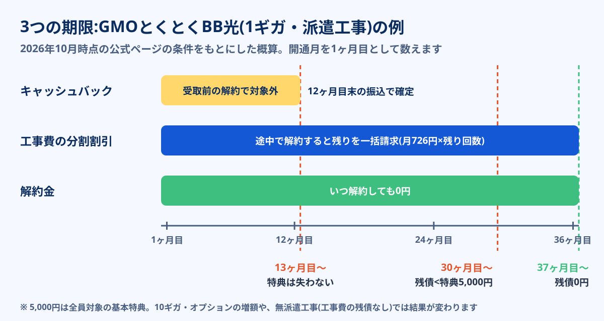

GMOとくとくBB光の公式キャンペーンページには、キャッシュバックの案内メールは開通月を1ヶ月目として11ヶ月目に届き、振込時期までに解約すると特典は適用されないと書かれています。NURO光の公式特設ページは開通11ヶ月後と17ヶ月後の2回、BIGLOBE光は課金開始から12ヶ月目。どの窓口でも、お金が口座に入る前に解約すれば、その特典は消えます。
では、入金を確認した翌月に解約したらどうなるのか。そしてもう一度同じ回線を申し込めば、キャッシュバックを2回もらえるのか。この記事では、2026年10月時点で各社の公式ページに書かれている規約から、「受け取ったあとに解約しても損をしない月」を3つの期限で割り出す方法と、同じ回線での再契約が特典の対象になるかを整理しました。キャンペーンの金額比較は光回線キャンペーン比較、乗り換え全体の手順は光回線の乗り換え完全ガイドに分けてあり、ここでは「もらったあと」に絞ります。
キャッシュバックを受け取ったあとに解約すること自体は可能で、2022年7月以降の契約なら解約金は月額1ヶ月分相当が上限です。ただし損得を決めるのは解約金ではなく、①入金が完了したか ②代理店の規約に「一定期間内の解約は返還」の条項がないか ③工事費の分割残債がいくら残っているかの3つです。派遣工事で開通した場合、キャッシュバックより工事費の残債のほうが大きく、すぐ解約すると赤字になるケースが多くあります。また同じ回線を解約して申し込み直しても、2回目の特典は原則として対象外です(auひかりの公式条件は、KDDIのサービスを解約しての加入を対象外と明記)。2回目を狙うなら、別の回線へ乗り換えて、乗り換え先の「他社違約金補助」で残債を消すのが規約の範囲でできる方法です。
スマホはどれ?GMOとくとくBB光の料金を見る公式サイトへ →PR・申し込み前にキャッシュバックの受け取り条件を確認できます


解約後の乗り換え先も一緒に決めたい人へ
スマホのキャリアと住まいの条件から、次の回線の候補を絞れます。キャッシュバックと工事費を含めた総額も比べられます。
受け取ってすぐ解約すると動くお金は4つ
「キャッシュバックをもらって解約」と聞くと、違約金だけを気にする人が多いのですが、実際に請求書に載るお金は4種類あります。金額の大きさの順番は、たいてい工事費の残債 > レンタル機器の未返却金 > 解約金で、キャッシュバックの返還は窓口によって「ある・ない」が分かれます。
| お金の種類 | どんなときに発生するか | 金額の目安 |
|---|---|---|
| 解約金(契約解除料) | 定期契約の期間内に解約したとき。更新月なら0円 | 2022年7月以降の契約は月額1ヶ月分相当が上限。GMOとくとくBB光は0円、auひかり(ホーム)は4,730円 |
| 工事費の分割残債 | 「工事費実質無料」の割引期間中に解約したとき。残りが一括請求される | GMOとくとくBB光は最大26,400円を36ヶ月、NURO光は55,000円を36ヶ月で分割 |
| キャッシュバックの返還 | 代理店の規約に「開通から一定期間内の解約は返還」の条項がある場合 | 条項がある窓口では全額または一部。条項のない窓口も多い |
| レンタル機器の未返却金 | ルーター・ONUなどを期限までに返さなかったとき | GMOとくとくBB光の1ギガ用ルーターは11,000円(10ギガ用は22,000円) |
※ 2026年10月時点で各社の公式ページ・公式キャンペーンページに記載の内容。税込。工事費は派遣工事(作業員が来る工事)の場合です。
ここで押さえておきたいのは、解約金の上限ルールはキャッシュバックの返還条項には直接触れていないという点です。2022年7月の電気通信事業法の省令改正で上限が決まったのは事業者の「解約金」で、代理店が独自に出す現金特典の受取条件は、各窓口のキャンペーン規約で決まります。解約金そのものの仕組みは光回線の解約手順と違約金で詳しく説明しています。
主要5社:いつまで解約しなければいいか
各社の公式キャンペーンページから、「受取前に解約すると対象外になる期間」と「工事費の割引が続く期間」を並べました。左の列が過ぎればキャッシュバックは確定し、右の列が過ぎれば工事費の残債もなくなります。
| 回線(窓口) | キャッシュバックの受取 | 受取前の解約 | 工事費の割引期間 | 解約金 |
|---|---|---|---|---|
| GMOとくとくBB光 | 開通月を1ヶ月目として11ヶ月目に案内メール→口座登録の翌月末に振込 | 振込時期までの解約・プラン変更で対象外 | 36ヶ月(最大26,400円) | 0円 |
| NURO光(公式特設) | 開通11ヶ月後と17ヶ月後の2回(各45日間の手続き) | 受取前の解約・コース変更・退会で対象外 | 36ヶ月(55,000円) | 2,653〜4,523円(プランによる) |
| BIGLOBE光(公式) | 課金開始月を1ヶ月目として12ヶ月目 | 受取前の解約・退会・コース変更で対象外 | 新規工事費を特典で実質0円 | 月額1ヶ月分相当が上限 |
| auひかり(代理店経由) | 代理店分は最短で開通の翌月ごろ | 代理店の規約による | 35ヶ月(初期費用相当額割引) | 4,730円(ホーム・3年契約) |
| ソフトバンク光(代理店経由) | 代理店分は開通の数ヶ月後(窓口による) | 短期解約で返還を求める条項がある窓口あり | 24ヶ月(1ギガ・月1,980円割引) | 月額1ヶ月分相当が上限 |
※ 2026年10月時点の各社公式ページの記載をもとにした目安。BIGLOBE光のキャッシュバック(1ギガ3年プラン35,000円・10ギガ2年プラン55,000円)は2026年9月30日申込分までの条件で、10月以降は公式ページで最新の条件を確認してください。代理店の特典条件は申込ページごとに異なります。
表から読み取れるのは、キャッシュバックの確定は1年前後、工事費の割引終了は2〜3年と、2つの期限がずれていることです。キャッシュバックだけを見て「1年たったから解約しよう」と動くと、工事費の残債が残った状態で解約することになります。各社の受取時期をカレンダーに並べた表は光回線キャンペーン比較にもあります。
「3つの期限」で最短の安全解約月を出す
ここがこの記事の中心です。キャッシュバックを受け取ってから解約するとき、確認する期限は3つだけです。

- 期限1 キャッシュバックの入金が完了する月 「案内メールが届いた月」ではなく、実際に口座へ振り込まれた月で数えます。GMOとくとくBB光の規約は「振込時期までに」解約すると対象外という書き方なので、口座登録を済ませた段階で解約すると、入金前に特典が消える可能性があります。NURO光のように2回に分かれる場合は、2回目の入金月が期限です。
- 期限2 代理店の「返還条項」が切れる月 代理店の特典には、入金のあとでも「開通から◯ヶ月以内に解約した場合は返還」という条件を付けている窓口があります。受取が早い窓口ほど、この条項で短期解約を防いでいる傾向があります。申込ページの注意事項で「解約」「返還」「返金」の3語を検索し、該当する一文をスクリーンショットで残しておくと、あとで迷いません。
- 期限3 工事費の分割割引が終わる月 「工事費実質無料」は、工事費を36回などの分割払いにして、同じ額を毎月の料金から割り引く仕組みです。途中で解約すると割引が止まり、残りの分割金がまとめて請求されます。会員ページの料金明細で、工事費の分割金と同額の割引が何回目まで続くかを見れば、残りの回数がわかります。
- キャッシュバックを失わない最短月=期限1と期限2のうち遅いほうの翌月
- 赤字にならない最短月=受け取ったキャッシュバック > 工事費の残債 + 解約金 + 次の回線の事務手数料 になる月
- 完全に身軽になる月=期限3の翌月(工事費の残債が0円になる)
「もらってすぐ解約」で得をしたいなら、2つ目の条件を満たしているかを先に計算してください。満たしていなければ、解約は損になります。
計算例:GMOとくとくBB光を13ヶ月目に解約したら
具体的な数字で見てみます。GMOとくとくBB光を1ギガ・戸建て・派遣工事で、2026年11月に開通した場合です。公式キャンペーンページ(gmobb.jp/lp/gmohikari/)の2026年10月時点の特典は、全員対象の5,000円キャッシュバック(10ギガプランはさらに20,000円増額)。工事費は最大26,400円を36回の分割にし、同額を毎月割り引く方式です。
-
2027年9月(11ヶ月目):案内メールが届く
案内は契約時に発行される基本メールアドレスに届きます。送信日の翌月末日までに口座を登録しないと特典は無効です。
-
2027年10月末(12ヶ月目):振込
9月中に口座を登録すれば、翌月末日(営業日)に振り込まれます。この入金を通帳やアプリで確認するまでは、解約の申請をしません。
-
2027年11月20日まで(13ヶ月目):解約を申請
GMOとくとくBB光は毎月20日までの解約申請でその月の解約になり、解約月の料金は日割りされません。月末に回線を止めたいなら、20日の締めに間に合わせます。
-
2027年12月20日まで:ルーターを返却
無料レンタルのWi-Fiルーターは、解約月の翌月20日必着で返却します。間に合わないと1ギガ用で11,000円の端末損害金がかかります(37ヶ月利用すれば返却不要)。
このとき、工事費の残債はいくらになるかを、解約月ごとに計算したのが次の表です。工事費の分割金を月726円(2回目以降の額の目安)として計算しています。
| 解約する月 | 残りの分割回数 | 一括請求される残債の目安 | 5,000円のキャッシュバックとの差 |
|---|---|---|---|
| 13ヶ月目 | 23回 | 約16,700円 | 約11,700円の赤字 |
| 18ヶ月目 | 18回 | 約13,070円 | 約8,070円の赤字 |
| 24ヶ月目 | 12回 | 約8,710円 | 約3,710円の赤字 |
| 30ヶ月目 | 6回 | 約4,360円 | 約640円のプラス |
| 37ヶ月目以降 | 0回 | 0円 | 5,000円がそのまま残る |
※ 2026年10月時点のGMOとくとくBB光公式ページの条件(工事費最大26,400円・36回分割)をもとにした概算。開通月の請求を1回目として数えています。実際の残債は会員ページの料金明細で確認してください。次の回線の事務手数料(3,300円前後が多い)は含めていません。
オプションなしの基本特典だけで見ると、派遣工事で開通した人が受取直後に解約すると、1万円以上の赤字になります。キャッシュバックで残債を賄えるのは、残りが6回程度になる30ヶ月目以降です。一方、転用や事業者変更で入った人(作業員が来ない無派遣工事)は、そもそも工事費の残債がないため、解約金0円のGMOとくとくBB光なら、入金を確認した翌月に解約してもマイナスはほぼ出ません。同じ回線・同じ特典でも、入り方で損益がまったく変わるということです。
10ギガプランの増額(20,000円)や、ひかりテレビ・でんきなどのオプション増額を受けた場合、キャッシュバックは大きくなりますが、オプション側にも「付与時期に解約していると対象外」という条件が付きます。オプションを先に解約すると、本体の解約より前に増額分を失うことがあります。オプションの解約は、入金を確認してから本体と同じタイミングで行ってください。
同じ回線で2回目のキャッシュバックはもらえる?
「解約して、また同じ回線を申し込めば、もう一度キャッシュバックがもらえるのでは」という発想は自然ですが、各社の条件はこれを想定して作られています。公式ページで確認できた範囲をまとめました。
| 回線 | 公式に書かれている条件 | 2回目の見込み |
|---|---|---|
| auひかり | 乗りかえスタートサポートは「ご加入手続中または既にご利用中のKDDIサービスをキャンセル・解約されてのご加入」を対象外と明記 | auひかりを解約して入り直すのは対象外 |
| GMOとくとくBB光 | キャンペーンは「とくとくBB光の新規入会と同時に」新規開通で申し込んだ人が対象。無料ルーターレンタルは会員1人につき1回のみ | 過去の会員の再入会が対象になるかは明記なし。申込前に問い合わせて確認 |
| BIGLOBE光 | 申込形態が「光回線再利用」の場合は特典の対象外 | 同じ回線設備を使い直す形の申込は対象外 |
| NURO光 | 特典の対象は新規入会。受取前の解約・コース変更・退会で対象外 | 再入会の扱いは公式ページで明記を確認できず。申込前にサポートで確認 |
| ソフトバンク光 | 代理店の特典条件は申込ページごとに異なる | 申込ページの注意事項で「過去」「再」「解約」の記載を確認 |
※ 2026年10月時点で各社の公式ページ・公式キャンペーンページで確認できた記載。明記がない項目を「もらえる」と判断せず、申込前に窓口へ確認してください。
注意したいのは、明記がないことは「もらえる」という意味ではない点です。キャンペーン規約の多くには「その他、当社が対象外と判断した場合」という趣旨の一文があり、短期間の解約と再申込を繰り返す申込は、この一文で対象外とされる余地が残ります。各社が共有する公的なブラックリストは公表されていませんが、同じ会社の中では過去の契約履歴が残るのが普通です。
2回目を狙うなら「別回線へ乗り換え」
規約の範囲でキャッシュバックをもう一度受け取る現実的な方法は、別の回線(または別の光コラボ)へ乗り換えることです。しかも乗り換え先の多くは、今の回線の解約金や工事費の残債を肩代わりする「他社違約金補助」を用意しています。前の章の計算で赤字の原因になっていた工事費の残債を、ここで消せるわけです。
| 乗り換え先 | 他社の解約費用の還元 | 還元の対象に含まれるもの |
|---|---|---|
| ソフトバンク光 | あんしん乗り換え:最大10万円 | 他社の違約金・撤去工事費など(証明書の提出が必要) |
| GMOとくとくBB光 | 最大60,000円 | 解約金・撤去費用・現在の回線の工事費や端末代の残債 |
| NURO光 | 最大60,000円 | 他社の解約費用(公式特設ページの条件による) |
| BIGLOBE光 | 最大40,000円 | 他社の解約費用(公式ページの条件による) |
※ 2026年9〜10月時点の各社公式ページの記載。還元されるのは証明書に記載された実費までで、上限額がもらえるわけではありません。
手順で大事なのは、今の回線を先に解約しないことです。GMOとくとくBB光の他社違約金補助は「申込の時点で他社サービスを解約している場合は対象外」と明記しており、さらに「開通月を1ヶ月目として3ヶ月目の末日までに他社サービスを解約し、明細を提出」という期限があります。つまり順番は、次のとおりです。
-
今の回線のキャッシュバック入金を確認する
通帳やアプリで入金を確認し、日付をメモします。代理店の返還条項の期間が過ぎているかも、申込時の規約で確認します。
-
今の回線の「解約費用の内訳」を会員ページで確認する
解約金・工事費の残債・撤去工事費・レンタル機器の4つです。この合計が、乗り換え先の還元で取り戻したい金額になります。光コラボ同士なら事業者変更承諾番号もこの段階で取得します。
-
乗り換え先を申し込み、他社違約金補助の申請フォームも出す
今の回線は解約せず、契約したままの状態で申し込みます。補助の申請は申込完了メールのフォームから行う窓口が多いので、見落とさないようにします。
-
新しい回線の開通を確認してから、旧回線を解約する
ネットが使えることを確認してから解約します。事業者変更なら解約手続きは不要で、切り替えと同時に前の契約が終わります。
-
解約費用の証明書を、期限内に提出する
請求書や会員ページの画面など、契約者名と解約費用の項目・金額が載ったものを提出します。期限は窓口ごとに違うため、開通日が決まった時点でカレンダーに入れておきます。
ソフトバンク光の「あんしん乗り換えキャンペーン」は、他社の解約金・工事費残債を証明書の提出で還元する仕組みです。キャッシュバックを受け取ったあとに残った工事費の残債が大きいほど効きます。
※ 申請の手順と必要書類はソフトバンク光への乗り換え完全ガイドで解説しています。代理店の特典に短期解約時の返還条件がないかも、申込ページで確認してください。
やってはいけない4つのこと
- 口座を登録した直後に解約する:登録しただけでは入金前です。「振込時期までの解約は対象外」と書く窓口では、そこで特典が消えます
- 家族の名義に変えて、同じ住所で申し込み直す:規約で同一住所・同一世帯や過去の契約を見る窓口があり、実態と違う申告は規約違反として特典の取り消しや返還の対象になりえます
- 乗り換え先を決める前に旧回線を解約する:他社違約金補助の多くは「申込時点で他社サービスを利用中」が条件です。先に解約すると補助を受けられません
- 解約月の請求書や明細を捨てる:乗り換え先に解約費用を還元してもらうには、契約者名と金額が載った証明書が必要です。紙がなければ会員ページの画面を保存しておきます
なお、契約から短期間で「やっぱりやめたい」という場合は、キャッシュバックとは別の話として初期契約解除制度があります。契約書面を受け取った日から8日以内なら、解約金などを払わずに契約を解除できる制度です。ただし事務手数料や、すでに実施した工事の費用は請求されることがあり、キャッシュバックももちろん対象外になります。
短期で動く予定がある人の窓口の選び方
転勤や引越し、同居の予定があって「2年は使わないかもしれない」とわかっている人は、申込の時点で窓口の選び方を変えるだけで、解約時の損をかなり減らせます。
| あなたの予定 | 選ぶ基準 | 候補の考え方 |
|---|---|---|
| 1年以内に動くかもしれない | 受取が早く、返還条項がない窓口。または工事の要らない回線 | キャッシュバックの金額は「もらえない可能性がある額」として割り引く。ホームルーターも比較に入れる |
| 1〜2年で動く可能性がある | 解約金0円+転用・事業者変更で工事費が発生しない入り方 | 光コラボ同士の事業者変更なら工事費の残債が生まれにくい |
| 3年以上住む予定 | セット割と月額を優先。キャッシュバックは受取の手間で選ぶ | スマホのキャリアに合わせて光回線7社比較から選ぶ |
何年ごとに乗り換えると得になるかという周期の考え方は光回線は2年ごとに乗り換えるべきかで、5年総額のシミュレーションつきで扱っています。工事費の「実質無料」の仕組みは光回線の初期費用と工事費が詳しいです。
よくある質問
キャッシュバックをもらったあと、すぐ解約しても返還を求められませんか?
同じ光回線を解約して再契約すれば、キャッシュバックは2回もらえますか?
キャッシュバックの案内メールが届いた月に解約しても大丈夫ですか?
工事費の残債はどこで確認できますか?
短期解約を繰り返すとブラックリストに載りますか?
まとめ:解約は「入金確認」と「残債の計算」のあとで
- キャッシュバックは入金の前に解約すると消える。案内メールや口座登録の時点ではまだ確定していない
- 入金後でも、代理店の規約に短期解約の返還条項がないかを申込ページで確認する
- 派遣工事で開通した人は、工事費の残債がキャッシュバックより大きいことが多い。GMOとくとくBB光の1ギガ・基本特典なら、13ヶ月目の解約で約1.2万円の赤字
- 同じ回線の解約→再契約で2回目をもらうのは原則として難しい(auひかりは公式に対象外と明記)
- 2回目を狙うなら別回線へ乗り換え、他社違約金補助で残債を回収する。旧回線は先に解約しない
次の回線をどこにするかは、スマホのキャリア別に光回線おすすめ7社比較で絞り込めます。解約の手続きそのものの流れは光回線の解約手順と違約金を参考にしてください。
- GMOとくとくBB「GMOとくとくBB光 限定特典」キャンペーンページ 特典内容・注意事項・解約手続き・契約期間について(2026年10月確認)
- GMOとくとくBB「開通工事の流れ|GMOとくとくBB光」(工事費最大26,400円・36ヵ月の割引)(2026年10月確認)
- KDDI「auひかり 乗りかえスタートサポート特典 ホーム」対象外条件・契約解除料(2026年10月確認)
- BIGLOBE「BIGLOBE光申込特典(キャッシュバック)」キャンペーン情報(2026年10月確認)
- NURO光 公式特設ページ「キャッシュバック」注意事項、「お引越し先でもNURO 光 特典」(工事費の割賦残債)(2026年10月確認)
- 総務省「電気通信事業法施行規則の一部を改正する省令」(2022年7月施行・期間拘束契約の解約金上限)
- 各社の金額・条件は申込ページによって異なります。申込前に申込画面の条件を確認してください